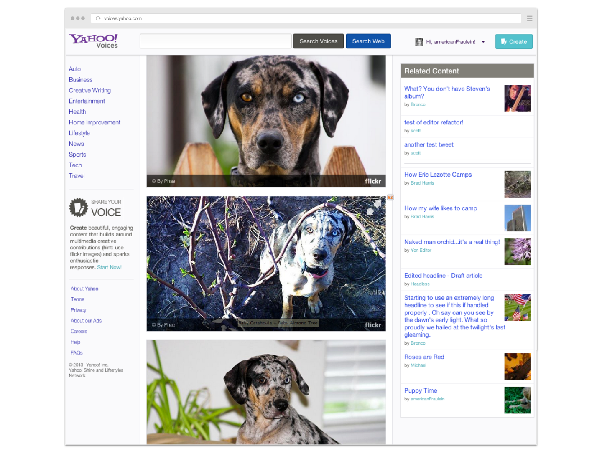
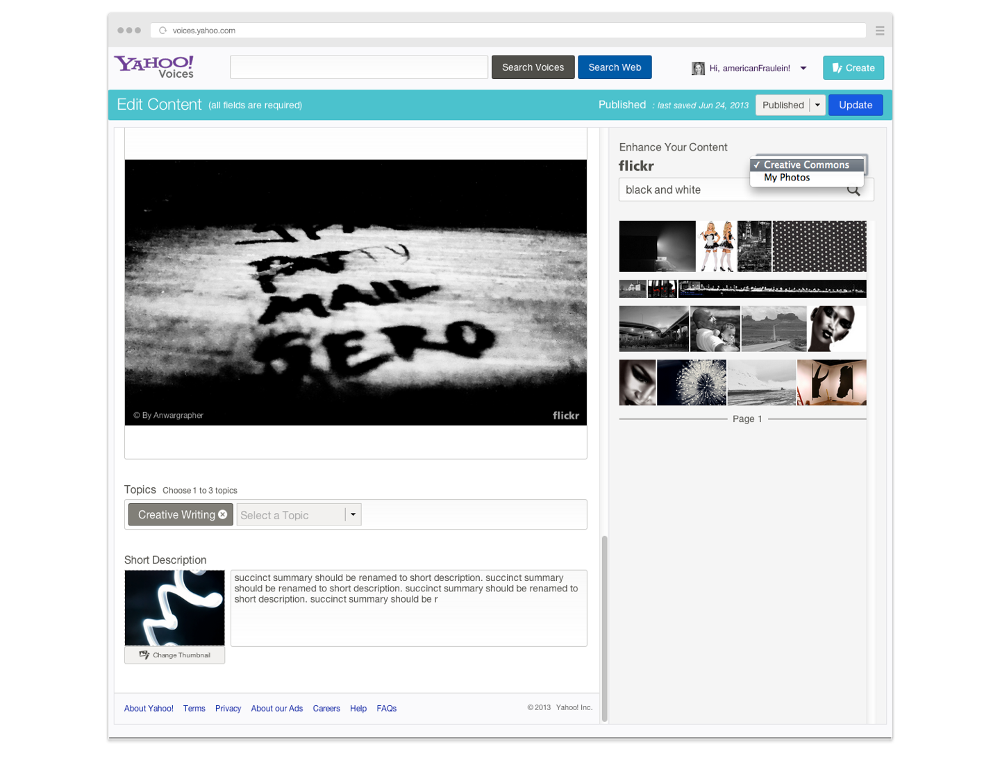
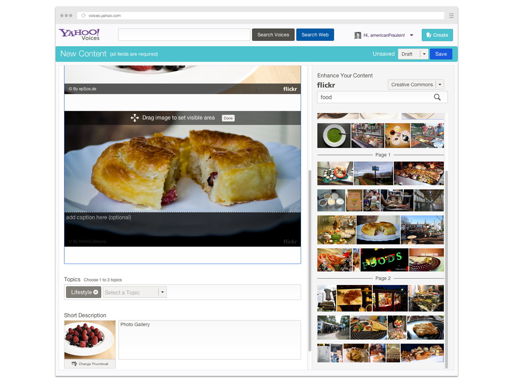
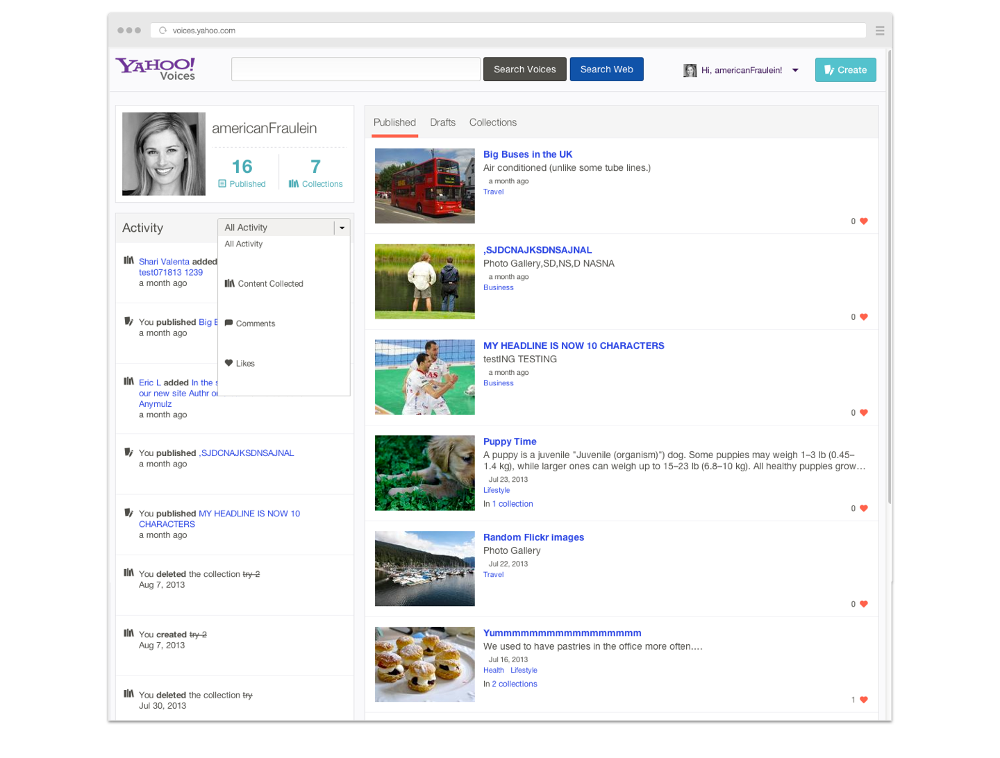

Yahoo Voices is a responsive site that was created for creators. Built for both internal global editors and consumer authors, Voices provided easy content creation with integrated Flickr search.

Site visitors can also create collections of content. Highly viewed and collected content is featured on the main page.

Easy drag and drop editing with Flickr image search



Create, save and share collections of content

Your profile with an activity feed
